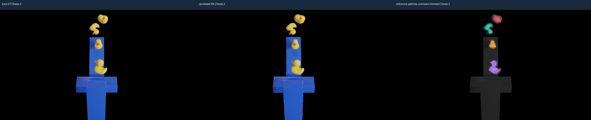
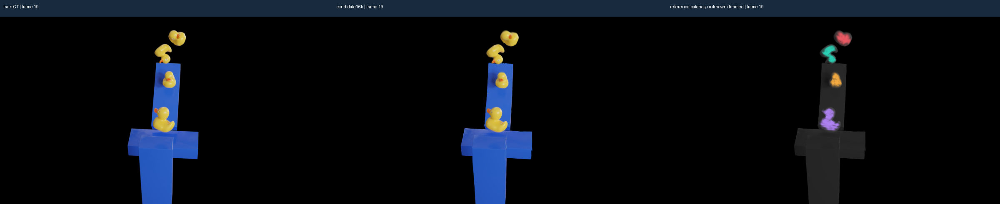
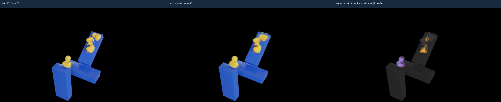
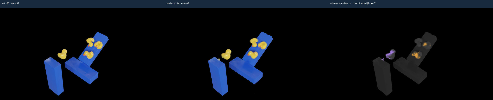
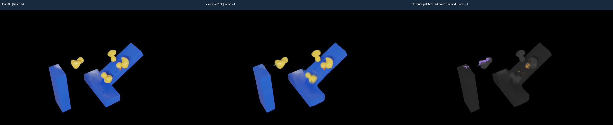
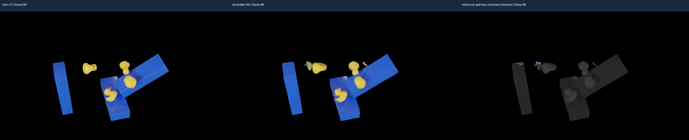
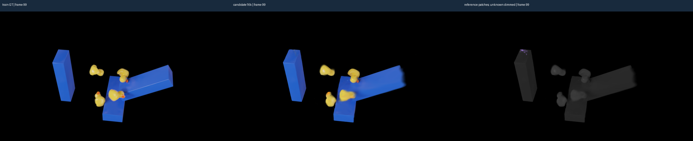
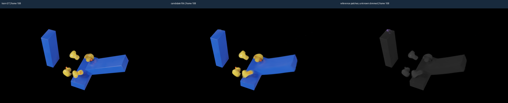
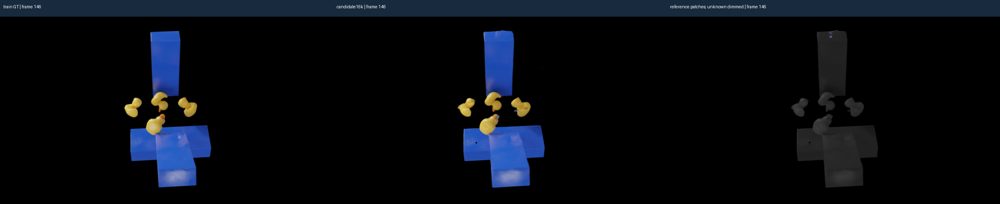
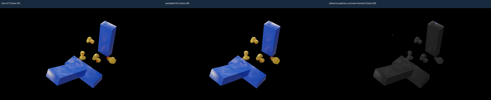

尚未启用新形态损失。每行左：训练GT；中：16k候选；右：早期参考点颜色，未知点为实际颜色的灰暗版本。不是训练完成后的效果比较，不是真实物体/材料分割。
早期贡献约65–67%，帧74降至7.29%，帧86/99/108为零。未能证明这组监督覆盖待修复的中段可见形态，因此保留16k完整状态，停止余下34k，不宣布改进成功。可见贡献不足不能单独证明材料身份错误，亦不能归因缺失外力。









